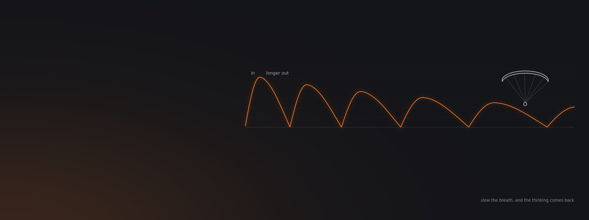
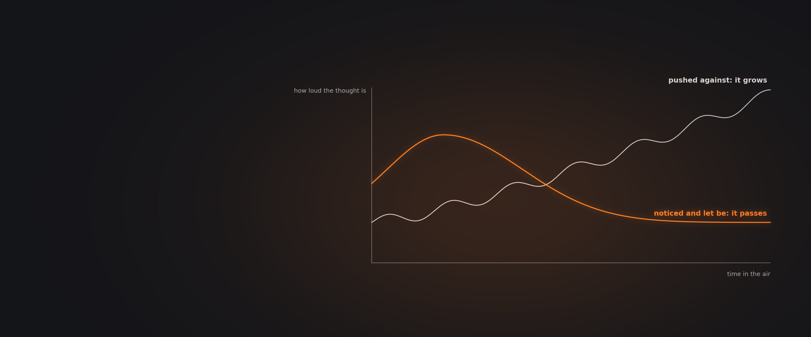
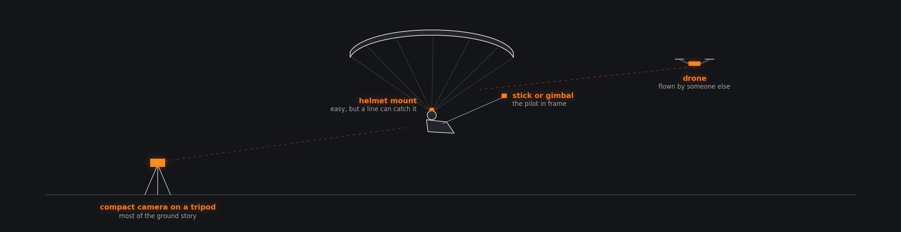

How Do I Stay Calm and Focused When Paragliding?
The mental side of flying from a sports psychologist and pilots who have worked on it, then the practical tools around the sport: how to read a wing review, how pilots film, and how a few make a living from it.
Eleven episodes. A sports psychologist on breathing and unhelpful thoughts, a pilot on flow and pre-flight rituals, an aviator on passion, obsession and fear, the most prolific wing reviewer, and four filmmakers from Instagram shorts to expedition films.
The eleven conversations
Open any tile for chapters, quotes and links Finest Paragliding Reviews & Superpower of Changing Wings as A HumanZiad Bassil11 chapters
Episode 6565 min
Finest Paragliding Reviews & Superpower of Changing Wings as A HumanZiad Bassil11 chapters
Episode 6565 min The Art of Capturing Human Flight | Jake Holland's Guide to Filming Passion Projects in Paragliding10 chapters
Episode 2149 min
The Art of Capturing Human Flight | Jake Holland's Guide to Filming Passion Projects in Paragliding10 chapters
Episode 2149 min Flying & Filming 1Benjamin Jordan7 chapters
Episode 2763 min
Flying & Filming 1Benjamin Jordan7 chapters
Episode 2763 min Flying & Filming 2Benjamin Kellet9 chapters
Episode 2876 min
Flying & Filming 2Benjamin Kellet9 chapters
Episode 2876 min Flying & Filming 3 : Andreas Lattner (hochzwei.media)13 chapters
Episode 4816 min
Flying & Filming 3 : Andreas Lattner (hochzwei.media)13 chapters
Episode 4816 min
 The Silent Mind In Screaming Winds : Unlocking Peak Focus To Attain Flow State In ParaglidingGrant Smith12 chapters
Episode 7168 min
The Silent Mind In Screaming Winds : Unlocking Peak Focus To Attain Flow State In ParaglidingGrant Smith12 chapters
Episode 7168 min Sports Psychology for Paragliding: Train Your Mind to Fly Better with Yvonne Dathe11 chapters
Episode 4620 min
Sports Psychology for Paragliding: Train Your Mind to Fly Better with Yvonne Dathe11 chapters
Episode 4620 min
 Identifying Passion Vs Obsession: An Aviator’s Approach to Overcoming Adversity, Rebuilding Trust and Finding Joy in the SkiesAshutosh Chopra7 chapters
Episode 815 min
Identifying Passion Vs Obsession: An Aviator’s Approach to Overcoming Adversity, Rebuilding Trust and Finding Joy in the SkiesAshutosh Chopra7 chapters
Episode 815 min AMA #1Aninder SinghNo chapters yet
AMA #1Aninder SinghNo chapters yet
You cannot switch off a thought, only the fight with it
Pushing an unhelpful thought away makes it louder. Sports psychologist Yvonne Dathe teaches pilots to notice it, let it be there, and use the breath to get the thinking brain back.
Yvonne Dathe works with pilots on stressful moments in the air, and prefers mental flexibility to mental strength: strength fixes on one point, while flying keeps changing the situation. Her central point is about thoughts. She once taught pilots to shout stop at an unhelpful thought and replace it with a positive one, and found it works only for small ones. Try to suppress a thought or feeling that matters and it grows and gains power. You cannot switch the thought off, but you can switch off the struggle with it, notice it, and bring attention back to the next waypoint or the next climb. Outside distractions are different: prepare them away before launch, starting with the sounds on your phone.
Breathing is the tool she comes back to. Under stress the rational part of the brain works poorly, because deciding carefully is not what survival needs. A deep breath into the belly activates the parasympathetic system that counters the stress reaction, and an out-breath longer than the in-breath relaxes further. That buys time, and with it better decisions. The simplest version needs no technique: focus on the breath, and feel it at the nose, in the lungs, at the shoulders. On goals, she warns that visualising only success can make the brain feel it has already arrived. Visualise the obstacles too, and what you will do about each.

Thoughts and feelings will come in the air, and you cannot simply switch them off. What you can switch off is the struggle with them.
Yvonne Dathe, sports psychologist Episode 71, paraphrased
Schematic: a thought you fight tends to grow; one you notice and let be tends to pass.
A routine, a reason, and an honest read of the fear
A consistent pre-flight routine quiets the mind before launch. Knowing why you fly keeps ego out of the decisions. And a fear is either rational, and tells you something, or it is not.
Grant Smith compares a pilot's pre-flight routine to the fixed ritual a rugby kicker goes through before a big kick: practised until it tells the body it is time. Paragliding already has safety checks; his point is that the routine can start the night before, with the forecast and the kit. Arrive with a picture of what the day will do and everything packed, and you are not distracted by a missing radio, so the mind is still at launch. He is just as clear about motivation. Competition and glory can be a fine driver, but he would find a serious accident in an ego battle meaningless in a way one in meaningful flying would not be, so self-awareness about why you are pushing matters. Some of his best memories, he adds, are landing with friends.
Ashutosh Chopra, an aviator by profession, works through where passion becomes obsession in a sport with no biological retirement age, and the need to give it a reasonable share of your life. His test for fear is practical: ask whether it is grounded. A rational fear, like flying a wing with broken lines, reflects a real rise in risk; an irrational one means the mind needs straightening out. He also separates skill from teaching: a good pilot is not necessarily a good instructor, and a student who is not learning from a teacher can and should find another. Yvonne Dathe adds a modern trap: scrolling other pilots' progress while you are stuck at work makes you frustrated, and frustration can mean training less.
How to read a wing review
The most prolific reviewer in the sport tests in rough air, low down, not on the best days. He sees little performance difference across the B class, and does not publish wings he scores below five.
Ziad Bassil test flies more wings than almost anyone and writes them up. The useful tests, he says, are not in the strongest conditions but in turbulent air when you are low and have to push on and turn: that is where a high aspect ratio wing will not turn on a dime and the differences between wings show. Across two years of B wings he found no real performance difference; the difference comes from the pilot. In the D class he thinks designers have reached a limit, with the same cloths and the same Dyneema and Kevlar lines, and he expects little change unless the certification box changes.
Two details are worth knowing when you read any review. Reflex, he explains, makes a profile harder to collapse and has nothing to do with trimming; trimming is about the lines, and the thin unsheathed lines on modern wings need it, while the thick sheathed lines of paramotor wings, with trimmers, forgive more. And on honesty, he is open about how he handles a bad wing: after early complaints from manufacturers, a glider he scores below 5 out of 10 goes into his personal notes rather than a published review, because he does not want to sink a small company's product on one pilot's experience. The implication for readers is plain: an absent review can say something too.
Decide the story before you press record
The filmmakers here agree on more than gear: a flight becomes a film when a story is chosen early, and most of that story happens on the ground.
Benjamin Jordan describes three ways to build a flying film: record everything and look for a story afterwards; write it first like a screenplay and tick off the scenes; or, his preference, start from a real inspiration, in his case the monarch butterfly's migration, and let the journey shape it. His kit is modest. A Sony RX100 compact on a tripod shoots about three quarters of his ground footage; in the air it is mostly GoPro, with drone shots flown by his wife. Jake Holland, who films expeditions, carries a Sony full frame body with a wide 16 to 35 and a 24 to 105, plus action and 360 cameras to put the viewer on the pilot, and calls this a golden age for what consumer kit can do.
Benjamin Kellet, one of the most followed paraglider pilots on Instagram, edits on his phone: the GoPro's microSD card goes straight into a USB-C reader and the footage is on the phone in about a minute. He has flown with a helmet camera for years and is relaxed about the snag risk, pointing out you can always drop the chin strap, while acknowledging a line round it could affect how the wing flies. Holland adds a caution about what gets shared: feeds fill with highlights and some accidents, and filter out the ordinary middle that is most of flying.

After Benjamin Jordan, Episode 21, chapter 6, and Benjamin Kellet, Episode 27, chapter 9. Schematic.
Brands, views and free wings
Nobody here needed a follower count to start. What they needed was to be someone the community respects, to pitch projects that fit a sponsor's existing plans, and to be honest about the wing they fly.
Kellet puts no benchmark on followers before approaching brands: what matters is being a respected, likeable member of the community whose videos are interesting and whom people listen to. When the money does come from platforms, he explains, it depends on how often people click the thumbnail, what share of the video they watch, and the total hours watched. Jordan's sponsorship method is to study what a company already spends on, then design the project to fit its existing branding, so the sponsor is buying more of what it already does. That, he says, is the path of least resistance.
Andreas Lattner and his partner Marlies built hochzwei.media from that kind of fit: she was a newspaper journalist, he took the photos, and partners liked getting story and images together. On free or discounted wings he is direct: a brand expects marketing value in return, and the only good version of the deal is flying a wing you are genuinely convinced by and saying so honestly. He also cautions against telling audiences about fine distinctions they cannot see, the way a climber's talk about grade 10 against 11 means nothing to a room of non-climbers.
Worth remembering
Each one links to the chapter where it is saidBreathe into the belly, and out for longer
Under stress the thinking part of the brain works poorly. Yvonne Dathe's fix is the breath: a deep breath into the belly calms the stress reaction, and an out-breath longer than the in-breath relaxes further. It buys time, and time brings back good decisions. If that is too much, just notice the breath at your nose and in your lungs.
Yvonne Dathe Simple breathing exercises that calm the nervous systemMind
Stop fighting the thought
Suppressing a thought that matters makes it louder. Notice it, let it be, fly the next climb.
Yvonne Dathe How to stop fighting your thoughts and fly with themVisualise the obstacles
Picturing only success can make the brain feel it has arrived. Plan for what is in the way.
Yvonne Dathe Visualising goals, and where that goes wrongPut the phone away
Scrolling other pilots' progress breeds frustration, and frustration can mean training less.
Yvonne Dathe The hidden cost of scrolling on your focusPreparation
Start the routine the night before
Forecast and kit sorted, so nothing at launch distracts a still mind.
Grant Smith Rituals, and visualising a new siteKnow why you are pushing
Glory is a fine driver. An accident in an ego battle is a meaningless one.
Grant Smith Backing off, and not lying to yourselfCheck whether the fear is grounded
A rational fear reflects real risk. An irrational one is the mind that needs work.
Ashutosh Chopra Making a plan, and acting on itTools
Test wings where it is hard
Low, in turbulence, trying to turn. Not on the best day.
Ziad Bassil What he looks for when reviewing a wingReflex is not about trim
Reflex resists collapse. Trim is about the lines, and thin lines drift.
Ziad Bassil Reflex profiles, and trimmingChoose the story early
Start from a real inspiration and let the journey shape it, rather than hunting for a story later.
Benjamin Jordan Three ways to build a narrativeQuestions these conversations answer
Each answer links to the chapter of the episode where the guest says it.
How do I stay calm when I get scared while paragliding?
Use your breath. Sports psychologist Yvonne Dathe explains that under stress the rational part of the brain works poorly, so decisions suffer. A deep breath into the belly activates the system that counters the stress reaction, and an out-breath longer than the in-breath relaxes you further. That buys time and lets the thinking brain come back. Simply noticing the breath works too.
Yvonne Dathe Simple breathing exercises that calm the nervous systemHow do I stop negative thoughts while flying?
Stop trying to stop them. Yvonne Dathe used to teach pilots to shout stop and switch to a positive thought, and found it only works for minor thoughts. Suppressing one that matters makes it grow. Instead, accept that it is there, drop the struggle with it, and bring your attention back to the next waypoint or climb. Prepare outside distractions, like phone sounds, before launch.
Yvonne Dathe How to stop fighting your thoughts and fly with themDoes visualisation help paragliding pilots?
Yes, if you do it properly. Yvonne Dathe warns that visualising only the goal can activate the brain's reward system as if you had already achieved it, which reduces the drive to act. Visualise the goal, then the obstacles on the way and the plan for each. She also suggests rehearsing how you will handle a distraction in the air, such as putting the phone away.
Yvonne Dathe Visualising goals, and where that goes wrongWhat is a good pre-flight routine for paragliding?
One you repeat every time, says Grant Smith, the way a rugby kicker does before a big kick. It can start the night before: study the forecast so you arrive with a picture of the day, and pack your kit so nothing is missing at launch. The safety checks are part of it, but the real value is arriving with a still, undistracted mind.
Grant Smith Rituals, and visualising a new siteHow do I know if my fear of flying is rational?
Ask whether it is grounded, says Ashutosh Chopra. A rational fear reflects a real increase in risk: his example is flying a wing with broken lines, where the chance of something going wrong has genuinely gone up. An irrational fear, where nothing about the situation justifies it, means your mind needs straightening out before you fly. Each calls for a different response.
Ashutosh Chopra Making a plan, and acting on itShould I change paragliding instructors?
If you are not learning, you can. Ashutosh Chopra points out that being a good pilot does not make someone a good instructor, and that a good teacher and a good student can still be a bad match, for example a quiet student with a shouting teacher. Nothing stops you from finding someone you learn better with. Question your instructors and weigh their answers.
Ashutosh Chopra Turning a flaw into a fixable instructionAre there real performance differences between EN B paragliders?
Very little, according to reviewer Ziad Bassil, who flies more wings than almost anyone. Over two years of testing B wings he found no real performance difference; the difference came from the pilot. He sees more variation in how wings handle turbulence and turning, which is why he tests low in rough air rather than on the strongest days.
Ziad Bassil Why everyone builds EN B wingsDo paraglider reviews ever publish bad scores?
Ziad Bassil is open about his own practice. After manufacturers objected to critical reviews early on, he decided that a wing he rates below 5 out of 10 goes into his personal notes rather than being published, because one pilot's experience could sink a small company's product. So when a wing is missing from a reviewer's list, that absence may be telling you something.
Ziad Bassil Pleasing manufacturers while staying honestWhat camera do paragliding filmmakers use?
Less than you might think. Benjamin Jordan shoots about three quarters of his ground footage on a Sony RX100 compact on a tripod, with GoPros in the air and drone shots flown by his wife. Jake Holland carries a Sony full frame body with 16 to 35 and 24 to 105 lenses, plus action and 360 cameras to put the viewer beside the pilot.
Benjamin Jordan and Jake Holland Filming with your hands on the togglesHow many followers do I need to get a paragliding sponsor?
There is no number, says Benjamin Kellet, one of the most followed paraglider pilots on Instagram. He would not tell anyone to wait for 10,000 followers. What brands respond to is a respected, likeable member of the community who makes interesting videos and gets on well with people. Benjamin Jordan's advice is to pitch projects that fit what a sponsor already spends on.
Benjamin Kellet When to approach brand sponsorships